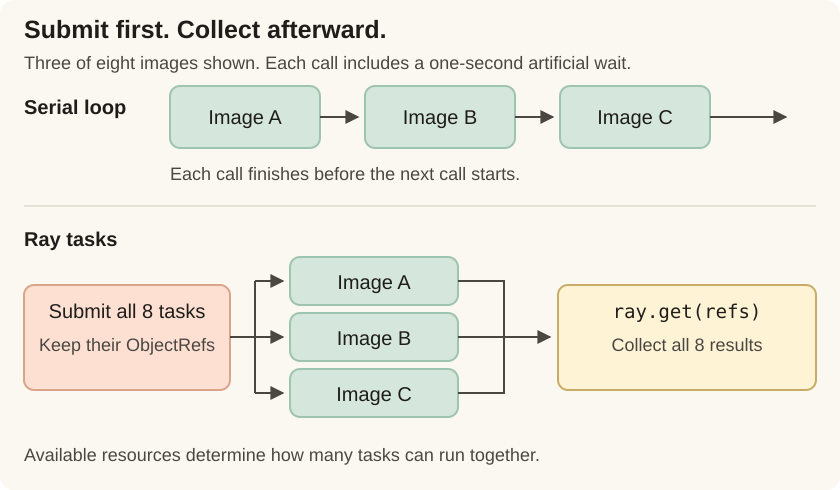
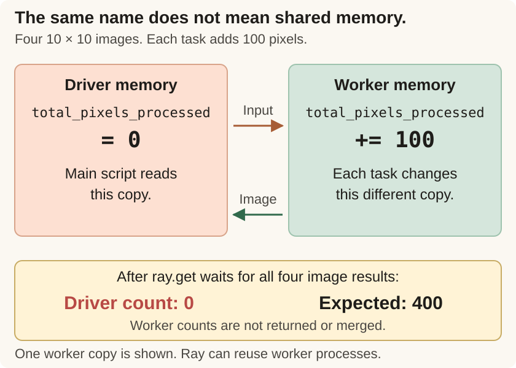
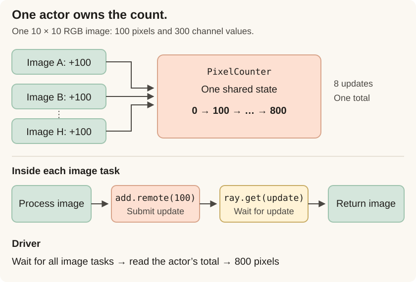
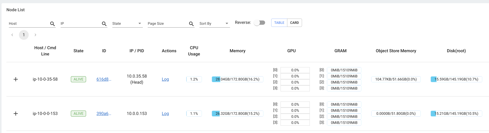

Ray · from a slow loop to distributed work
You have eight images and one function that inverts their colors. A loop processes one image at a time. How can independent images run together? Follow that question through Ray tasks, an actor that keeps a shared count, a larger cluster, and a dataset processed in blocks.
The walkthrough provides complete code at every stage. Then choose your own task and parallelize it with Ray. Your submission is graded for completion.
Follow one job through four problems
Keep the image transformation in view as each problem appears. Identify what changes: task scheduling, shared state, available workers, or data loading.
| Stage | Problem to predict | Ray tool to examine |
|---|---|---|
| Tasks | Eight images wait for one another in a loop. | Submit independent tasks and retrieve their results. |
| Actors | Workers need one shared count. | Send updates to an actor that owns the count. |
| Clusters | The workload grows to 10,000 images. | Distribute tasks across workers on multiple machines. |
| Ray Data | A 500 GB image collection exceeds a machine’s 16 GB memory. | Read, transform, and write data in blocks. |
The course’s arXiv corpus and measured nearest-neighbor timings are separate examples from the image walkthrough.
Terms with a dotted underline have definitions. Hover or tap a term to read its explanation.
Get the complete example
Study the complete image example, then choose your own task to parallelize with Ray. Submit my_ray_task.py and completion.txt by Tuesday Dec 1 at class start. Complete the steps below for full credit. The seven image checks are practice feedback.
Use Python 3.11–3.13 with the pinned Ray version in requirements-ray.txt. The Ray installation guide lists supported platforms.
git pull
cd labs/lab-11/starter
python3 -m venv .venv
source .venv/bin/activate
python -m pip install -r requirements-ray.txtOn Windows, activate the environment with .venv\Scripts\activate. If python3 selects another version, use python3.13 to create the environment.
| File | Your action |
|---|---|
ray_images.py | Read the complete task, counter, and row functions. Follow each function in the diagrams below. |
demo_ray.py | Run the supplied image, timing, counter, and dataset demonstration. |
test_ray_images.py | Run function checks, then the full seven-check suite. |
requirements-ray.txt | Install Ray Data, NumPy, and Pillow. |
The example uses short functions, clear names, and no code comments. The explanations and diagrams stay beside the code. Each stage below includes a complete program and its download link. Keep that program beside ray_images.py, which supplies the functions shown in the reading.
The image example uses generated data. Your chosen task can also use small local inputs. No cloud account, Java installation, or paid service is needed.
Ray Core primitives
Ray Core organizes work as tasks, actors, and objects. Use this table as a reference while reading the examples. The Ray Core concepts guide introduces these building blocks.
| Primitive or call | Purpose | Result or role |
|---|---|---|
ray.init() | Connect to Ray. Start a local instance when needed. | Connection context |
@ray.remote | Define a remote function or actor class. | A wrapper used with .remote() |
process_image_task.remote(image) | Submit one image task. | An ObjectRef for its result |
ObjectRef | Identify an object held by Ray. | A reference to data that may still be computing |
ray.get(refs) | Wait for results and retrieve their values. | A value for one reference, or a list for a reference list |
PixelCounter.remote() | Create one actor with its own state. | An actor handle |
counter.add.remote(100) | Submit a method call to that actor. | An ObjectRef for the method’s return value |
ray.put(value) | Store a value in Ray’s object store. | An ObjectRef |
ray.wait(refs, num_returns=1) | Wait for the requested number of ready references. | (ready_refs, remaining_refs) |
ray.shutdown() | Disconnect and stop local Ray processes started by this connection. | None |
The examples use ordinary calls with one return value. The ray.put and ray.wait rows are extra reference material. Your completion task does not require them. The ray.shutdown() call does not remove an existing cloud cluster.
0 · Start with a loop
Start with eight small images. Each image has 10 rows, 10 columns, and three color channels: red, green, and blue. Each channel value is between 0 and 255. Subtracting it from 255 inverts that channel.
Input RGB value: [0, 64, 255]
Inverted value: [255, 191, 0]The supplied image operation is:
def process_image(image):
time.sleep(1)
return 255 - imageThe one-second sleep simulates a delay. It does not measure expensive CPU work. This demonstration makes overlapping calls visible. It does not establish the speedup of a real image filter.
A loop calls this function for eight images. When does the second call start? Does the second image need the first image’s result?
Check your explanation
The second call starts after the first returns. Each image transformation is independent. Without overhead, eight one-second waits take eight seconds sequentially.
Use predict, run, explain. Predict what can run independently and what must wait. Run each local stage. Explain what the returned value represents.
Run stage 0: the serial loop
This program imports the image function shown above and processes all eight images in order. Download stage0_serial.py.
import time
import numpy as np
from ray_images import process_image
if __name__ == "__main__":
images = [np.full((10, 10, 3), value, dtype=np.uint8) for value in range(8)]
start = time.perf_counter()
results = [process_image(image) for image in images]
print(f"serial: {time.perf_counter() - start:.2f} seconds")
print("images:", len(results))
print("first pixel:", results[0][0, 0])python stage0_serial.pyExpect eight images and a first pixel of [255 255 255]. The artificial waits take about eight seconds before other overhead.
1 · Run independent tasks
The same image function can run as a remote task. The supplied @ray.remote decorator marks its wrapper for Ray.
| Operation | What the caller receives | What waits? |
|---|---|---|
process_image(image) | The processed image | The caller waits for the function. |
process_image_task.remote(image) | An ObjectRef for the result | The caller can submit another task. |
ray.get(result_refs) | The processed images | The caller waits for the requested results. |
Think of an object reference as a coffee receipt. The receipt identifies the order you will collect. Similarly, an ObjectRef identifies a result that may still be running. A reference is not the image itself.

Read the task code
@ray.remote
def process_image_task(image):
return process_image(image)
def process_parallel(images):
refs = [process_image_task.remote(image) for image in images]
return ray.get(refs)The list comprehension submits every image before ray.get(refs) waits. Ray can overlap tasks when resources are available. The returned list follows the reference order, even if tasks finish in another order.
The function leaves the inputs unchanged. An empty input list produces an empty result list.
This loop waits after every submission. Why does that prevent the next image from starting sooner?
results = [ray.get(process_image_task.remote(image)) for image in images]Check your explanation
The loop cannot submit its next task until the current result arrives. Submit all independent tasks first. Available resources determine how many can run together.
Run stage 1: parallel tasks
This program calls the complete task functions shown above. Download stage1_tasks.py.
import time
import numpy as np
import ray
from ray_images import process_parallel
if __name__ == "__main__":
ray.init(include_dashboard=False, log_to_driver=False)
try:
images = [np.full((10, 10, 3), value, dtype=np.uint8) for value in range(8)]
start = time.perf_counter()
results = process_parallel(images)
print(f"parallel: {time.perf_counter() - start:.2f} seconds")
print("images:", len(results))
print("first pixel:", results[0][0, 0])
finally:
ray.shutdown()python stage1_tasks.pyThe image count and first pixel should match stage 0. Runtime varies with resources and startup overhead.
python test_ray_images.py --unit process_image_task
python test_ray_images.py --unit process_parallel2 · Keep one pixel count
The next request is one shared pixel count. First, try adding each image’s pixels to a global variable.
Count pixels, not channel values
| Quantity | One 10 × 10 RGB image | Eight images |
|---|---|---|
| Pixels: height × width | 100 | 800 |
| Channel values: height × width × channels | 300 | 2,400 |
The expression image.size counts channel values. This lab counts pixels with image.shape[0] * image.shape[1]. The expected shared count is 800 pixels.
First try: a global variable
This complete program processes all eight images and adds their pixel counts to total. Keep it beside ray_images.py. Download stage2_global.py.
import numpy as np
import ray
from ray_images import process_image
total = 0
@ray.remote
def process_and_count_global(image):
global total
processed = process_image(image)
total += image.shape[0] * image.shape[1]
return processed
if __name__ == "__main__":
ray.init(include_dashboard=False, log_to_driver=False)
try:
images = [np.full((10, 10, 3), value, dtype=np.uint8) for value in range(8)]
refs = [process_and_count_global.remote(image) for image in images]
results = ray.get(refs)
print("images:", len(results))
print("expected pixels:", sum(image.shape[0] * image.shape[1] for image in images))
print("driver pixels:", total)
finally:
ray.shutdown()The driver waits for every image task with ray.get(refs). Will driver pixels print 0 or 800? Explain your prediction.
python stage2_global.pyAfter all eight image tasks finish, the program prints:
images: 8
expected pixels: 800
driver pixels: 0The global total statement lets the function update its module’s variable. Each worker process has its own copy. Those updates do not change the driver’s total. See Ray’s guide to global variables.

Two workers are shown for illustration. Ray can reuse a worker for several tasks, so its local count can accumulate. The driver’s count stays separate regardless of task placement.
Then use one actor
An actor is a running class instance that owns state. Create one counter actor. Pass its handle to every task that must update that count. All updates now reach the same counter.

Read the counter code
@ray.remote
class PixelCounter:
def __init__(self):
self.total = 0
def add(self, count):
self.total += count
def get_total(self):
return self.total
@ray.remote
def process_and_count(image, counter):
processed = process_image(image)
ray.get(counter.add.remote(image.shape[0] * image.shape[1]))
return processedThe actor starts at zero and adds each image’s pixel count. Each task waits for its actor update before returning the processed image.
A submitted counter update may still be waiting. Finishing the image task does not automatically finish an actor call that task submitted. Waiting for the update makes completion explicit. Calls from different submitters have no guaranteed relative order.
Image processed → counter update submitted → update completed → task returns
All image tasks return → driver reads the actor's totalRun stage 2: one shared counter
This program creates one actor and passes the same handle to every image task. Download stage2_actor.py.
import numpy as np
import ray
from ray_images import PixelCounter, process_and_count
if __name__ == "__main__":
ray.init(include_dashboard=False, log_to_driver=False)
try:
images = [np.full((10, 10, 3), value, dtype=np.uint8) for value in range(8)]
counter = PixelCounter.remote()
refs = [process_and_count.remote(image, counter) for image in images]
results = ray.get(refs)
print("images:", len(results))
print("pixels:", ray.get(counter.get_total.remote()))
print("RGB channel values:", sum(image.size for image in images))
finally:
ray.shutdown()python stage2_actor.pyExpect eight images, 800 pixels, and 2,400 RGB channel values.
Compare the two programs. Both wait for all image tasks. The global version leaves the driver at zero. The actor version sends every update to one counter and reads 800.
This lab makes one update per input image. Retrying an update is separate work and can count an image twice. Automatic deduplication is not part of this exercise.
python test_ray_images.py --unit PixelCounter.add
python test_ray_images.py --unit PixelCounter.get_total
python test_ray_images.py --unit process_and_count3 · Move to a cluster
The workload grows from eight images to 10,000. The image function still handles one image. Worker machines add capacity for more concurrent tasks.
The Ray task and actor functions you built locally can run on cloud workers without rewriting their logic. The cluster configuration selects the machines. Ray schedules the same remote calls across their available resources.
The head node supplies cluster management services. Worker nodes run tasks and actors. The application still submits tasks, passes actor handles, and retrieves references. A real cluster also needs compatible packages and access to its input data.

Illustrative model: 10,000 independent jobs, one second each, no overhead
8 available task slots: 10,000 / 8 = 1,250 seconds
80 available task slots: 10,000 / 80 = 125 secondsThese are idealized calculations, not measured runtimes. Startup, scheduling, data transfer, and shared resources change actual results.
Read the cluster YAML
A YAML file is a shopping list for the cluster. YAML stores settings as names and values. Indentation groups related settings.
This resource configuration requests one head node and ten worker nodes. Download my-cluster.yaml. It is a reading excerpt. A working deployment also needs cloud access, a compatible machine image, and software setup.
cluster_name: lab11-images
max_workers: 10
provider:
type: aws
region: us-east-1
available_node_types:
head:
node_config:
InstanceType: m5.large
resources: {CPU: 0}
worker:
min_workers: 10
max_workers: 10
node_config:
InstanceType: c5.2xlarge
resources: {CPU: 8}
head_node_type: head| YAML setting | What it controls |
|---|---|
cluster_name | The name used to identify this cluster. |
provider | AWS and the region where machines will run. |
head_node_type: head | Use the head settings for the head node. CPU: 0 keeps ordinary CPU tasks on workers. |
worker.node_config and resources | Select c5.2xlarge machines and expose eight logical CPU resources per worker. |
Worker min_workers and max_workers | Both are ten, so this requests a fixed pool of ten workers. |
Top-level max_workers | Cap the total worker count at ten. The head node is separate. |
These keys describe the execution environment, not the image algorithm. The Ray configuration reference defines their behavior.
Each c5.2xlarge has eight vCPUs, giving 80 worker vCPUs in this example. These are virtual CPUs, not 80 physical cores. See the AWS instance specifications.

The cluster needs the same Python packages and imported files as your laptop. YAML file_mounts can copy files to nodes, and setup_commands can install packages there. See the Ray dependency guide.
Run the same program in a different place
Locally, the actor example runs with:
python stage2_actor.pyAfter completing the cloud configuration, the launcher workflow would be:
ray up my-cluster.yaml
ray submit my-cluster.yaml stage2_actor.py
ray down my-cluster.yaml| Command | What changes |
|---|---|
ray up | Launch and configure the machines described by the YAML. |
ray submit | Copy the named script to the head node and run it there. |
ray down | Shut down the cluster according to the provider settings. |
The submitted script uses the same PixelCounter and process_and_count definitions from ray_images.py. The ray submit command copies the named script only. Arrange imported files and packages separately. See the launcher command reference.
The example’s ray.init() call can attach to the Ray instance already running on the head node. Stage 3 below uses address="auto" to require an existing cluster. The task and actor definitions stay unchanged.
The eight-image input checks behavior. A larger input provides more independent tasks to use additional workers. More machines help when enough work can overlap. The earlier timing calculation remains an idealized estimate.
Set the worker minimum and maximum to two. Which image-processing or actor functions must change?
Check your explanation
None. The worker pool changes from ten machines to two. The same task and actor definitions run with fewer resources.
Reading only: AWS deployment is optional and does not affect completion credit. This excerpt is not a complete deployment setup. Cloud machines incur charges. The AWS launch guide covers credentials and cluster preparation.
See the machines in the Ray Dashboard
The Dashboard’s Cluster view lists nodes, their state, and resource usage. This screenshot shows a two-node example from the Ray documentation. Locate the Head label, then compare the nodes’ CPU and memory usage.

The YAML describes the resources you request. The Dashboard shows the running nodes and their current activity. Use the log links when investigating a failed task. This screenshot is for reading; the supplied stage programs keep the live dashboard disabled.
Read stage 3: connect to an existing cluster
This optional program runs from a node in an already configured Ray cluster. Download stage3_cluster.py.
import numpy as np
import ray
from ray_images import process_parallel
if __name__ == "__main__":
ray.init(address="auto")
try:
images = [np.full((10, 10, 3), value, dtype=np.uint8) for value in range(8)]
results = process_parallel(images)
print("cluster CPUs:", ray.cluster_resources().get("CPU", 0))
print("images:", len(results))
print("first pixel:", results[0][0, 0])
finally:
ray.shutdown()The call ray.init(address="auto") connects to an existing cluster. It raises an error when none is found. It does not create worker machines. See the Ray initialization reference.
Read this code for the lab. Running it requires the cluster setup described above and remains optional.
Does adding worker machines increase the memory available to one Python list in the driver?
Check your explanation
No. That list still belongs to one process. The next step must change how input is read and processed.
4 · Process data in blocks
Now consider 500 GB of image files in storage and a driver machine with 16 GB of memory. The next limit is memory, even if many workers are available.
Why the driver can run out of memory
Read this loading pattern with large-image-folder as a placeholder. The loop keeps every decoded image in one Python list.
from pathlib import Path
import numpy as np
from PIL import Image
from ray_images import process_parallel
images = []
for path in Path("large-image-folder").glob("*.png"):
with Image.open(path) as image:
images.append(np.array(image))
results = process_parallel(images)The list belongs to the driver process. If its arrays exceed available memory, loading fails before process_parallel(images) submits any tasks. This is an out-of-memory failure, often shortened to OOM. More worker machines do not enlarge the driver’s memory.
The 500 GB describes stored files. Decoded array memory depends on image dimensions, channels, and data type. Compressed file size and decoded memory size differ.

If loading fails inside the loop, would adding ten more workers let process_parallel(images) run?
Check your explanation
No. The driver must finish building its list before reaching that call. Read and process smaller portions instead.
Read, process, and write blocks
Image files → read blocks → transform rows → write output blocksRay Data represents the pipeline as work over blocks. Its transformation accepts a row dictionary containing an image. Ray Data schedules the transformation. The function passed to Dataset.map must be a plain Python callable.

Read the row function
def process_row(row):
return {**row, "image": process_image(row["image"])}The expression **row copies the row’s fields into a new dictionary. The next entry replaces its image with the processed image. The original row and image stay unchanged. This function has no @ray.remote decorator because Ray Data schedules its calls.
python test_ray_images.py --unit process_rowRun stage 4: a dataset pipeline
This program passes the ordinary row function to Ray Data and collects eight small results. Download stage4_data.py.
import numpy as np
import ray
import ray.data
from ray_images import process_row
if __name__ == "__main__":
ray.init(include_dashboard=False, log_to_driver=False)
try:
images = [np.full((10, 10, 3), value, dtype=np.uint8) for value in range(8)]
rows = [{"id": i, "image": image} for i, image in enumerate(images)]
dataset = ray.data.from_items(rows)
results = dataset.map(process_row).take_all()
print("rows:", len(results))
print("IDs:", sorted(row["id"] for row in results))
finally:
ray.shutdown()python stage4_data.pyExpect rows: 8 and IDs: [0, 1, 2, 3, 4, 5, 6, 7].
Keep the id field so results can be matched to their inputs. Dataset output order is not the correctness test. Compare images by ID.
For a large collection, the input and output would stay in storage. This is a reading example with placeholder paths:
dataset = ray.data.read_images("s3://YOUR-BUCKET/raw-images")
processed = dataset.map(process_row)
processed.write_parquet("s3://YOUR-BUCKET/processed-images")Run stage 4 with files instead of an in-memory list
This complete program creates eight small PNG files, processes their rows, and writes Parquet output. It uses the same process_row function. Download stage4_streaming.py.
from pathlib import Path
from tempfile import TemporaryDirectory
import numpy as np
from PIL import Image
import pyarrow.parquet as pq
import ray
import ray.data
from ray_images import process_row
if __name__ == "__main__":
with TemporaryDirectory() as directory:
source = Path(directory) / "images"
output = Path(directory) / "processed"
source.mkdir()
for value in range(8):
image = np.full((10, 10, 3), value, dtype=np.uint8)
Image.fromarray(image).save(source / f"{value}.png")
ray.init(include_dashboard=False, log_to_driver=False)
try:
dataset = ray.data.read_images(str(source))
dataset.map(process_row).write_parquet(str(output))
rows = sum(pq.read_metadata(file).num_rows for file in output.glob("*.parquet"))
print("written rows:", rows)
finally:
ray.shutdown()python stage4_streaming.pyExpect written rows: 8. The final count reads Parquet metadata, not the image arrays. The temporary files are removed when the program finishes. This small run demonstrates the pipeline, not large-data performance.
The read and map operations build a plan. Writing results triggers execution. Ray Data moves blocks through the pipeline instead of building one list of every image in the driver.
Keep the result out of the driver too. The take_all() call collects all result rows into the calling process. A large result can cause OOM there. Use it only for the eight-row example. See the collection warning.
Ray Data uses backpressure to slow upstream work when later stages cannot keep up. Ray can also move object-store blocks to disk. These mechanisms reduce memory pressure. They do not make memory unlimited.
Large images, memory-heavy functions, or too many concurrent tasks can still exhaust worker memory. Temporary arrays inside a function also use memory. See Ray’s memory model and memory guidance.
Run and check the example
These checks apply to the supplied image example. They help you study Ray and do not determine your completion grade. Your chosen task can use different inputs, outputs, and function names.
Test one function at a time
python test_ray_images.py --list
python test_ray_images.py --unit process_parallel
python test_ray_images.py --unitThe six unit checks use small arrays and local Ray stand-ins. Each check isolates one function with known helper behavior. Unit results are practice feedback. They do not start Ray workers.
Run the full suite with the supplied code:
python test_ray_images.pyThe full suite checks six function contracts and one complete pipeline with real Ray tasks, an actor, and Ray Data. The supplied code should pass all seven checks. Missing required dependencies cause failure.
| Practice check | Image example behavior |
|---|---|
| Task | Return the supplied image function’s result. |
| Parallel calls | Submit all images before one ray.get() call on the reference list. Preserve input order. |
| Counter update | Add each supplied count. |
| Counter read | Return the stored total. |
| Counted task | Count pixels and finish the actor update before returning. |
| Dataset row | Transform the image while preserving metadata and input. |
| Complete pipeline | Actual Ray execution produces the correct images and count. |
Run the supplied demo
python demo_ray.pyThe timing values depend on your machine. The remaining output should be:
Each call includes a one-second artificial wait.
same images: True
pixels: 800
RGB channel values: 2400
small local Ray Data result: 8 rowsCheck that all image results agree and the counter reports 800 pixels. Read the serial and parallel timings afterward. Your timing depends on your machine and workload.
The one-second sleep illustrates overlapping waits. It does not establish CPU scaling. No runtime or speedup threshold affects the grade.
Explain the result
What does a remote call return before an image is ready? Why did the driver’s global count stay zero? Where does the actor’s count live? Why must each counted task wait for its actor update? Why does Ray Data need an ordinary function? Why can a driver list exhaust memory even with many workers?
Check your explanation
A remote call returns an object reference. Worker changes to globals stay outside the driver’s memory. The actor owns the shared count. Waiting makes each task’s completion include its counter update. Ray Data schedules the ordinary row function itself. A list of every decoded image still consumes the driver’s memory.
Choose your own task and parallelize it
Choose a small task with several independent inputs. Apply the task pattern from stage 1 to your own operation and data. You can adapt the supplied code. Keep the code short and clear. Do not add code comments.
Possible tasks include counting words in separate texts, summarizing separate number lists, or applying a different image transformation. Choose something you can explain. A small example is enough.
- Choose your task and a few inputs that can be processed independently.
- Run the task in a regular Python loop to get a serial result.
- Use Ray to submit one task per independent input before waiting for results.
- Gather the results and compare them with the serial result.
- Record your run and explain what you learned.
For arrays, compare values with np.array_equal. For unordered results, compare by an input ID. Actors, Ray Data, cloud deployment, and timing measurements are optional for your task.
Put your task function in my_ray_task.py. Include small inputs so the file runs without the walkthrough files.
Submit two files
Submit my_ray_task.py and completion.txt to Gradescope by Tuesday Dec 1 at class start.
| File | Include |
|---|---|
my_ray_task.py | Your chosen task, small inputs, serial loop, Ray tasks, and result comparison. |
completion.txt | Your task and inputs, run command, actual output, and two to four sentences explaining independent work and what you learned. |
Include any extra setup commands in completion.txt. If your run fails, include the exact error and what you tried. That record counts as run evidence for completion.
How completion is graded
Complete all five steps with a good-faith attempt to earn full credit. Staff review the code, run evidence, and short explanation for completion. Speedup, task complexity, and the seven image checks do not affect the grade. A slower Ray run can still receive full credit.
Empty files or an unchanged copy of the image walkthrough alone do not complete the assignment. Show your chosen task and your attempt to parallelize it. If results differ, describe the difference. There is no correctness score from the image test suite.
The lab meets Thursday November 19, 2026. There is no class on November 24. The December 1 deadline is unchanged.
Optional earlier exercises
The earlier MapReduce, Spark, and nearest-neighbor exercises remain below for optional implementation practice. They are separate from the completion assignment. Their arXiv corpus and measured timings are separate from the image examples above.
Open the earlier exercises and worked examples
Trace how keys select a partition
This widget shows the grouping rule you will implement: four documents produce word-count pairs, and each key determines a partition. The colors show the destination selected by the widget’s simple hash.
Step through the phases and hover over a pair to inspect its destination. The optional exercise implements the same grouping pattern in Python over 4,000 abstracts. The lab uses Python’s hash(), so its partition numbers can differ from this illustration.
Open a terminal in the top-level AdvanceDatabase folder you cloned in Lab 1. Pull the latest files. Then open this lab’s starter folder:
git pull cd labs/lab-11/starter
The git pull command above updates the entire starter/ directory, including data/. If you download files individually, include data/. The Python links do not include the corpus and vector files.
Trace map output into independent partition dictionaries
Predict how many pairs mapping will emit. Watch both occurrences of pizza become separate pairs and arrive in the same group. Each partition has a dictionary, and each word in that dictionary has its own list of counts.
Follow two lunch orders: “Pizza, pizza!” and “Salad pizza.”. Each word requests one meal. These toy records show the counting rule before you apply it to the corpus. The displayed bucket numbers are a fixed teaching choice. The optional implementation uses Python’s hash(key) % n_partitions within one process.
Worked result: The map emits four pairs. Shuffle groups three values under pizza and one under salad. Reduction gives {"pizza": 3, "salad": 1}, independent of bucket numbering.
Enable JavaScript to step through the code and intermediate state.
Python detail: give each partition its own dictionary
Each partition needs a separate dictionary to store its key groups. In Python, {} creates an empty dictionary. The list partitions holds the dictionaries, with positions numbered from zero.
Suppose we want two partitions. This code writes one pizza value into partition 0. Predict what partition 1 will contain.
partitions = [{}] * 2
partitions[0]["pizza"] = [1]
print(partitions)
# [{'pizza': [1]}, {'pizza': [1]}]Why does pizza appear in both? The expression [{}] * 2 creates one dictionary and two list entries that point to it. Both entries show the same dictionary, so a change through either entry appears through both. Python does not copy the dictionary.
This breaks the partition rule: pizza was assigned to partition 0, but partition 1 now shows pizza too. The same problem occurs with [{}] * n whenever n is greater than one.
Create a new dictionary for each partition:
n = 2
partitions = [{} for _ in range(n)]
partitions[0]["pizza"] = [1]
print(partitions)
# [{'pizza': [1]}, {}]The expression [{} for _ in range(n)] runs {} once per partition, creating a new dictionary each time. The variable _ holds a loop number that we do not use. Now partition 0 contains pizza, and partition 1 remains empty.

partitions[0]["pizza"] = [1]. Follow partition 1’s arrow: does it reach the changed dictionary or a separate empty dictionary?Check yourself: with separate dictionaries, what changes when you add salad to partition 1?
After partitions[1]["salad"] = [1], partition 1 contains salad. Partition 0 still contains only pizza. Each partition keeps its own key groups.
Implementation checkpoints: create each partition dictionary separately. Preserve all duplicate occurrences in map_words and shuffle. Test with more than one partition. One bucket hides routing errors. The MapReduce runner executes sequentially. Spark and Ray add actual scheduling.
Optional practice files
| File | Ships as | What's inside |
|---|---|---|
mapreduce.py | optional practice | run_mapreduce runner provided. map_words, partition_for, shuffle, reduce_counts are YOUR JOB |
spark_wordcount.py | you edit, run locally | session setup + DAG printing provided. The three-transformation chain is YOUR JOB |
ray_speedup.py | you edit, run locally | brute-force neighbors(), the vectors, and the timing harness provided. Complete knn_remote and knn_all_parallel |
corpus.py | provided, read-only | 4,000 arXiv abstracts, shared with Labs 9 and 10. Download the data/ folder too |
embeddings.py | provided, read-only | load() returns 4,000 unit vectors with 64 dimensions, in the same order as DOCS |
test_sparkray.py | provided | OFFLINE group always runs. SPARK/RAY groups auto-skip if not installed |
Keep your code short, clear, and easy to edit. Use clear names and simple steps. Do not add code comments. Replace each raise NotImplementedError with your implementation. The function instructions are below.
The supplied DOCS list contains (arxiv_id, title, abstract) tuples from data/arxiv_4000.jsonl.gz in a fixed order. The corpus contains 800 papers from each category: cs.DB, cs.IR, cs.LG, stat.ML, and cs.DC. It contains about 700,000 words. The file data/arxiv_4000.f16 stores the matching MiniLM embeddings from Lab 9.
Install the optional engines with pip install pyspark ray. Spark runs on the JVM and needs a JDK supported by the installed PySpark version. Check it with java -version. Both examples run in local mode on your machine. MapReduce requires neither package, so you can begin it while preparing the optional dependencies.
Optional coding · MapReduce ungraded practice
For each function, follow the small example from words to pairs, grouped value lists, and totals. Check that repeated occurrences survive until their values are added, then run the function check. Converting occurrences to a set would discard duplicates and undercount repeated words.
Check these optional functions with python test_sparkray.py --unit NAME. This older harness provides practice feedback only.
- Read run_mapreduce (5 min): identify where it maps records, calls the shuffle, and reduces each grouped key. In a distributed implementation, the shuffle transfers records to the workers responsible for their keys.
map_words: tokenize withre.findall(r"[a-z]+", text.lower()), exactly like Lab 10. Return a list with one(word, 1)pair per occurrence, in input order. Keep repeated words as separate pairs.- partition_for: return
hash(key) % n_partitions. Within a run, equal keys must always select the same partition. - shuffle: create one dictionary per partition. Route each pair using
partition_for, then append its value to that partition’s list for the key. Return a list of exactlyn_partitionsdictionaries, including empty ones. Preserve the input pairs and the order of each key’s values. reduce_counts: return(word, sum(values)). For example,('pizza', [1,1,1])becomes('pizza', 3).
Run python3 mapreduce.py:
$ python3 mapreduce.py
31210 the
26815 and
21780 a
15090 of
14747 to
...Common words often dominate an unfiltered word count. Removing stop words changes which words are counted. A combiner preserves the counts while reducing intermediate pairs. The practice map function emits one raw pair per occurrence without either optimization.
Optional coding · Spark ungraded practice
Use the same word-count model to read the Spark chain: create occurrences, attach counts, group equal keys, add values. Predict where redistribution is required before looking for ShuffledRDD in the printed plan.
The starter provides the session and DAG printing. Write flatMap to emit word strings, map to turn each word into (word, 1), and reduceByKey to sum counts. The MapReduce function map_words already emits pairs, so do not pass its output through a second word-to-pair mapping.
The lines argument to word_counts(sc, lines) is an RDD of text strings. Tokenize each string with re.findall(r"[a-z]+", text.lower()). Return an RDD of (word, count) pairs. Do not call collect() inside this function. Transformations build the plan. The later collect() call runs it.
$ python3 spark_wordcount.py
=== the DAG (read bottom-up; the stage break is the shuffle) ===
(4) PythonRDD[5] at RDD at PythonRDD.scala:59 []
| MapPartitionsRDD[4] at mapPartitions at PythonRDD.scala:197 []
| ShuffledRDD[3] at partitionBy at NativeMethodAccessorImpl.java:0 []
+-(4) PairwiseRDD[2] at reduceByKey at spark_wordcount.py:37 []
| PythonRDD[1] at reduceByKey at spark_wordcount.py:37 []
| ParallelCollectionRDD[0] at readRDDFromFile at PythonRDD.scala:326 []Read the printed plan from its input upward. The map-side work includes flatMap and map. ShuffledRDD marks redistribution before the reduce-side work. The (4) labels indicate four partitions. Compare the final top-15 list with MapReduce’s result. The optional Spark test checks the complete result dictionary.
Optional coding · Ray neighbor searches ungraded practice
Transfer the image example to the corpus. Each document’s neighbor search is independent, just as each image transformation was independent. Submit all searches before retrieving results. Check the results against serial execution before comparing times.
For each abstract, find its ten nearest neighbors among the other 3,999 vectors. Each search is independent, so Ray can distribute the work across worker processes. This builds part of a k-nearest-neighbor graph. HNSW adds layers and neighbor-selection rules.
The supplied neighbors(doc) function ranks the other vectors by cosine similarity and returns their document positions. The vectors have unit length, so their dot products give cosine scores. Each search compares its vector with the other 3,999 vectors, each with 64 dimensions.
As a rough estimate, 25 ms per search would give 5 seconds for 200 searches. These estimates are separate from the measured reference run below.
- Complete
knn_remote(doc)inray_speedup.pyby returningneighbors(doc). The supplied@ray.remotedecorator makes this function a Ray task. - In
knn_all_parallel(docs), callknn_remote.remote(doc)for every document before waiting. - Pass all returned task references to one
ray.get()call. Return the results in the same order asdocs. Keepdocsunchanged.
The remote function uses the supplied VECTORS list. Ray makes these vectors available to workers for their searches. Calling ray.get() inside the launch loop would wait for each search before starting the next.
$ python3 ray_speedup.py
200 documents, 10 nearest neighbors each, brute force over 4,000 vectors
serial: 2.27 s
parallel: 0.66 s speedup: 3.5x
identical results: True
neighbors of [Fine-Grained Table Retrieval Through the Lens of Complex Que]:
Decomposition-Driven Multi-Table Retrieval and Reasoning for Numerical
Novel Table Search [Technical Report]
Toward Multi-Database Query Reasoning for Text2CypherThe reference Ray run was 3.5× faster on 10 cores and returned the same neighbors as the serial run.
The reference run was faster in parallel but did not scale in direct proportion to core count. Worker setup, scheduling, and data transfer add work, and some resources are shared. Increasing the number of searches may amortize some setup cost, while other overheads also grow. Measure the behavior on your machine rather than assuming a fixed speedup.
Measure how workload size and worker count affect speedup
Change the experiment. Set N_DOCS = 1000. Run the script again. Keep the value at 1000. Start Ray with ray.init(num_cpus=2, ...).
Report speedups for all three runs: 200 documents on all cores, 1000 documents on all cores, and 1000 documents on 2 cores. Explain which change affected the measured speedup more. Account for useful work and scheduling overhead.
Run python test_sparkray.py for the earlier exercises. Its OFFLINE, SPARK, and RAY groups are ungraded practice. Neither test script determines the completion grade.